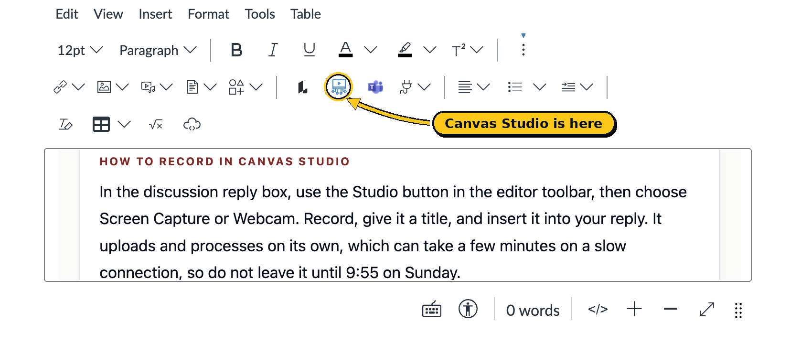

Before we talk physiology, it is important to me to know who you are, and for you to get to know each other. This class runs online, which means we do not get the accidental version of this, the talking before lecture starts. So we are doing it on purpose, in week one, before anything else.
What you are making
A vision board is a single image that shows what matters to you. Photos, pictures, words, colors, whatever gets it across. It should cover four things, and you can weight them however you like:
- Who you are. Include some photos of yourself if you are comfortable doing that. Only what you are happy for classmates to see.
- What matters to you. People, places, things you care about, things you do when you are not in class.
- Why you are taking this class. The real reason, whatever it is. "It is required for my program" is a real reason and you can say so.
- Where you are going. What you are working toward, in school or after it.
On privacy, and I mean this
Share only what you want classmates to have. Do not put your address, your workplace address, your schedule, your phone number, or anything with a document number on it into the board. If you would rather not include photos of yourself at all, use images that represent you instead. Nobody loses a point for that.
If there is something you want me to know but not the class, message me directly instead of putting it on the board.
Two ways to build it
Pick whichever one fits how you already work. They are worth the same, and neither is the advanced option. There is also a third route further down if you would rather make the whole thing as a video.
Method one
The Pinterest Method
Build a board in Pinterest, arrange it how you want it, then screenshot it.
- Good if you already collect images.
- Fastest of the three.
- Screenshot it, do not send me the board link.
Method two
The PowerPoint Method
One slide. Drop images and text boxes onto it and arrange them, then export the slide as an image.
- Good if you want control over the layout.
- Google Slides and Canva both work the same way.
- File, Export, and choose PNG or JPG.
Or make it all one video
If the way you would naturally do this is to talk over your images the way you would in a short video post, do that instead. Build the board and the walkthrough as one thing rather than making a board and then recording yourself next to it.
You can shoot it however you like, on your phone or in Studio, with the images appearing as you talk about them. It counts the same, and it is often the more natural version for people who already make video.
One extra thing if you go this route
Post one still image as well, a screenshot of any moment where the whole board is visible. That is so your classmates can see what you made in the thread itself without scrubbing through a video, and so it is there for anyone reading with the sound off. It takes about ten seconds and it is the only difference between this route and the other two.
Learning the tool is part of the assignment
If the app you pick is new to you, working out how to use it is not a detour from the real work. It is some of the real work. You will be asked to make and submit digital things all semester, and this is the low stakes place to find out how your tools behave.
What to submit
Two things, both in the same Canvas discussion post, by Sunday, September 13 at 10:00 pm Pacific. A post with only one of them is not complete.
- The board itself, as a single image file. PNG or JPG. Not a link, not a PDF, not a slide deck. One image, so it displays in the discussion where everyone can see it without downloading anything.
- A Canvas Studio video of you introducing yourself and walking us through the board. Two to four minutes. Record it with your camera on, say your name, and then talk us through what is on the board and why. You do not need a script and you do not need to do it twice.
How to record in Canvas Studio
Start a reply to this discussion so the editor toolbar appears. The Studio button is the small blue screen with a play symbol in it, on the second row of the toolbar, between the dark angular icon and the purple Teams icon.

- Click the Studio button, then choose Webcam to record yourself, or Screen Capture if you want to show your board on screen while you talk. Either is fine for this assignment.
- Let the browser have your camera and microphone when it asks. If you accidentally block it, the permission can be turned back on from the padlock icon in the address bar.
- Record. Say your name, then walk through your board. Two to four minutes. You do not need a script and you do not need a second take.
- Give it a title with your name in it, so it is findable later, then insert it into your reply.
- Wait for it to finish processing before you submit. On a slow connection this takes a few minutes, which is the reason not to start this at 9:55 on Sunday.
- Check your captions. Studio writes them automatically and they are usually close but not perfect. Open the video, edit the caption track, and fix anything that came out wrong.
Captions are not optional here
Your classmates include people who rely on them, and auto-captions get names and course words wrong more often than anything else. Fixing yours takes about two minutes and it is part of the assignment being complete.
Then reply to two classmates
Replies are due at the same time, Sunday, September 13 at 10:00 pm Pacific. Find two people you have something in common with, or two whose boards you had a question about, and reply to them. One or two sentences is fine. Say the thing you noticed, and ask them something. "Nice board" is not a reply.
How it is graded
Ten points, and it is graded on completion rather than quality. There is no correct vision board and I am not judging your design. If all six rows below are done, you have full marks.
| What | Points | Complete means |
|---|---|---|
| Board posted as an image | 2 | A single PNG or JPG visible in the post, not a link or an attachment nobody can open. If you made it all as one video, a still showing the whole board counts. |
| All four areas covered | 2 | Who you are, what matters to you, why this class, where you are going. All four appear somewhere on the board. |
| Video posted | 2 | Two to four minutes, in the same post, plays for other students. Studio, or your own video file if you made it all in one. |
| You introduce yourself in it | 1 | Your name, and you walk through the board rather than reading a paragraph at the camera. |
| Two replies to classmates | 2 | Two separate people, each reply saying something specific and asking something. |
| Posted on time | 1 | Your post and both replies in by Sunday, September 13 at 10:00 pm Pacific. |
Late work
Everything is due Sunday, September 13 at 10:00 pm Pacific. Up to 24 hours late, so by 10:00 pm Monday the 14th, is an automatic 50 percent reduction. After that it is a zero. If something has gone wrong in your week, message me before the deadline rather than after it, and we will sort it out.
If you are dreading the video
Some of you will read "record yourself on camera" and immediately want to skip this one. A few things that might help.
- Nobody is graded on how they look or sound, or on how polished it is. The rubric above is the whole of it.
- Everyone in the class is doing the same thing in the same week, and they are all as uncomfortable as you are.
- Two minutes is short. Say your name, point at four things on your board, done.
- If there is a reason you cannot appear on camera, message me. There is an alternative and you will not be penalized for asking.